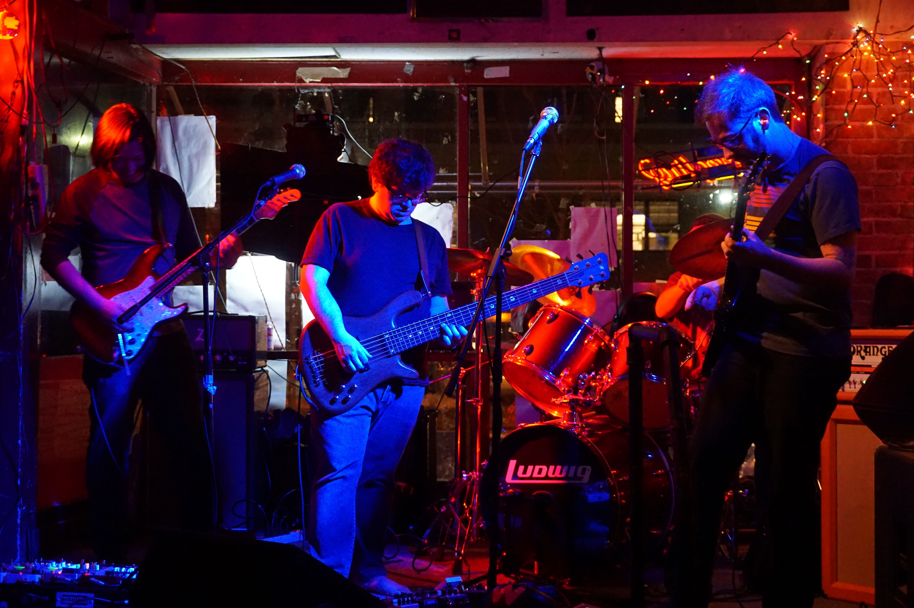
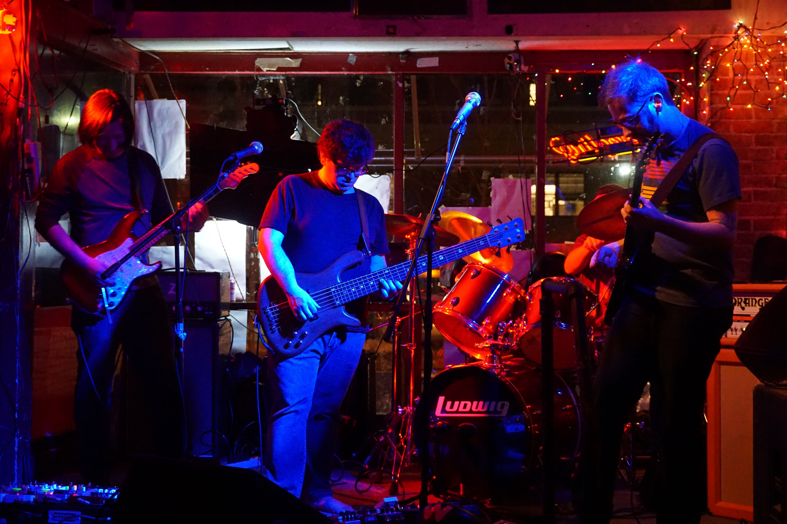
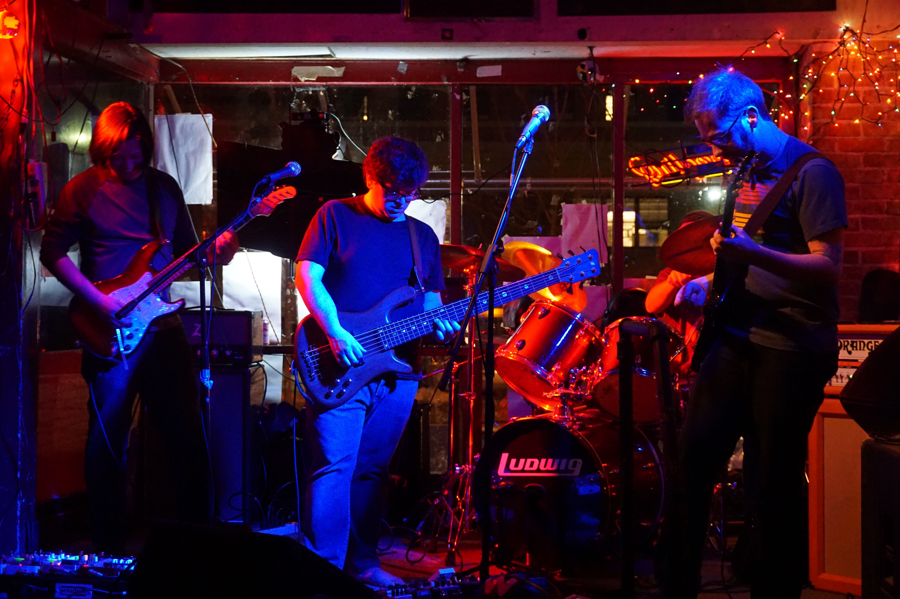

Tortoise Forest is an instrumental odyssey based out of Buffalo, NY. Seamlessly blending jam band funky grooves with prog rock sensibilities and a splash of electronics, the band creates instrumental compositions that are not at a loss for words. These reptiles' musical emanations defy easy classification, but are equally at home at a festival in the woods, an underwater rave, or a gathering of fellow prog-rock wizards.
"Mash Keys"
"Clouds"
Acoustic drums - Kick, Snare, 3 Toms, Hi-hats, Ride, 2 Crash
Guitar with pedalboard - 2x12 cabinet
2nd Guitar with pedalboard - 2x12 cabinet
Roland GR-55 (guitar synth) - DI out
Bass with pedalboard - 2 1x12" cabinets, DI out
At least one microphone - for talking between songs only (no singing)
